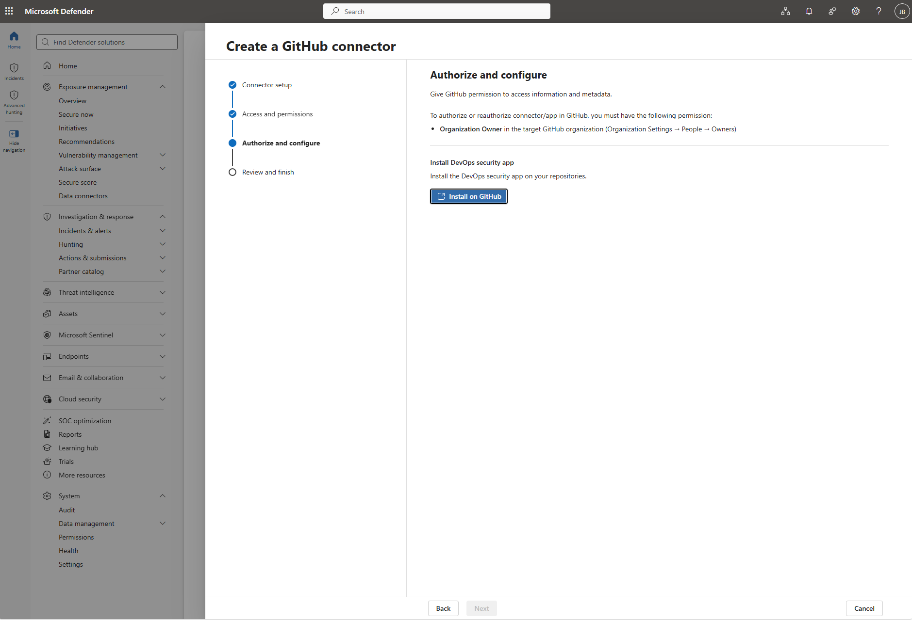

GitHub 커넥터 생성
권장 온보딩 경로입니다. GitHub 조직을 연결해 저장소를 온보딩하면, 로컬 설치 없이 포털에서 원격 On-demand 스캔을 트리거할 수 있습니다.
사전 요구사항
- Defender 포털 커넥터 관리 권한 — 최소 Security Administrator (Entra ID).
- 연결할 GitHub 조직의 Organization Owner.
Defender for DevOps Security 지원 범위 및 사전 요구사항은 지원 및 사전 요구사항을 참조하세요.
주의 동일 GitHub 조직이 이미 Azure 포털의 GitHub 커넥터로 연결돼 있다면, Defender 포털로 연결하기 전에 Azure 포털 커넥터를 먼저 해제해야 합니다. 해제 시 그 커넥터에 연결된 Defender for DevOps Security 기능은 더 이상 사용할 수 없습니다.
1단계: 테넌트 준비
커넥터 생성 흐름에 접근하려면 테넌트에 Cloud Security가 준비돼 있어야 합니다. 이미 활성화됐다면 Prepare my tenant 옵션이 보이지 않고 바로 진행됩니다.
- Cloud security > Overview 이동.
- Prepare my tenant 선택.
- 테넌트 준비 확인.
2단계: 커넥터 마법사 열기
- Defender 포털에서 MDASH Initiative > Settings로 이동. (이니셔티브 접근은 온보딩 시작의 진입점 참조.)
- Create and Manage connectors 선택 → Cloud Security Connectors 페이지로 이동됨.
- Connectors 탭에서 목록의 GitHub 커넥터 선택.
- (선택) 커넥터 이름 입력. 비우면 기본 이름 자동 부여. → Next.
3단계: 접근·권한 구성
| 권한 계층 | 설명 |
|---|---|
| Read (기본·제거 불가) | 변경 없이 저장소를 스캔하고 보안 이슈를 식별합니다. 소스코드 및 저장소 메타데이터, Actions·환경(environments)·배포(deployments), 커밋 상태 및 병합 큐(merge queues), 패키지·Pages·저장소 프로젝트, 어드바이저리 및 시크릿을 포함한 보안 관련 데이터를 읽습니다. |
| Write (선택) | 이슈·PR 생성/업데이트, 검사 결과 및 보안 발견 게시, Dependabot·시크릿 스캔 경보 관리, 저장소 메타데이터·속성 업데이트, 보안 이벤트·아티팩트 쓰기 등 워크플로 통합. 스캐닝·탐색만 하려면 Read로 충분. |
권한 선택을 검토하고 Next.
4단계: GitHub App 승인·설치

- Install → GitHub OAuth 대화 상자 열림.
- GitHub 로그인 후 온보딩할 조직 선택.
- GitHub App 설치 화면에서 설치 확인 → 대화 상자 닫힘.
- 성공 확인이 보이면 Next.
참고 이미 Azure 포털 GitHub 커넥터로 연결된 조직에는 App을 설치할 수 없습니다. 같은 조직을 Defender 포털에서 연결하려면 Azure 포털의 기존 커넥터를 먼저 삭제해야 합니다.
5단계: 검토 및 활성화
Review and finish 페이지에서 커넥터 이름·권한 범위·GitHub 조직명·온보딩될 저장소 수를 확인하고 Activate.
참고 활성화 후 온보딩된 저장소에 대해 On-demand 스캔을 트리거할 수 있게 되기까지 최대 1시간이 걸릴 수 있습니다.